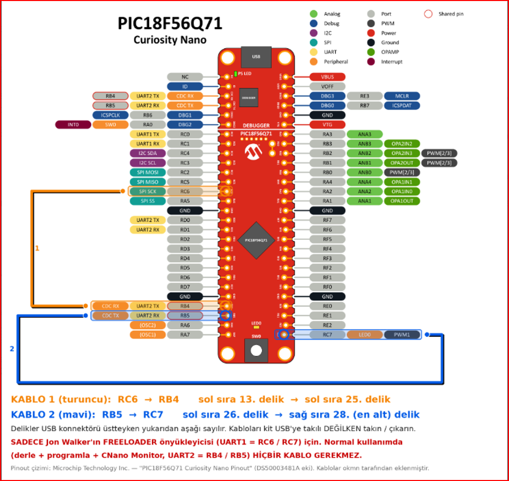
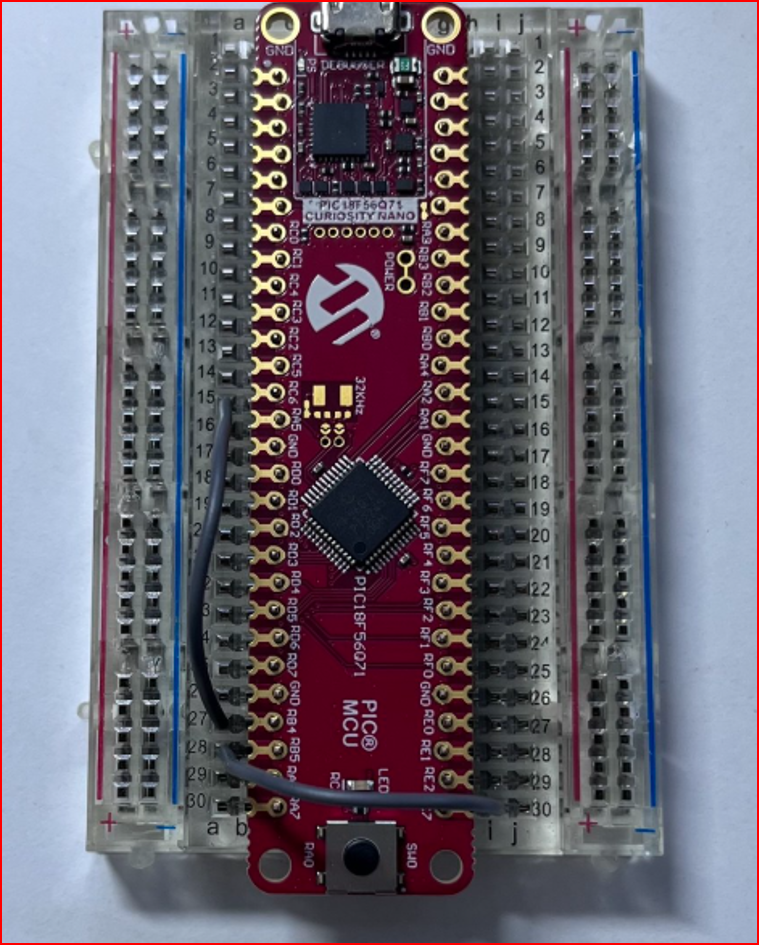

Compile, program and talk to Microchip's PIC18F56Q71 Curiosity Nano (EV01G21A) with one key – from Positron Studio, Proton IDE or VS Code. No MPLAB X, no programmer, no wires, no bootloader.
⬇ Download CNanoKit 💬 Forum topic Quick start VideosCompiles with Positron8, then writes, verifies and resets the kit through the kit's own on-board debugger (Microchip's free pymcuprog).
Checks that the PIC on the kit matches your Device = line before it writes anything.
Serial monitor for the kit's USB port: Text / HEX view and send, quick buttons, Reset PIC, log file, English / Turkish.
Your program uses UART2 (RB4 = TX, RB5 = RX), already connected inside the kit to its USB port.
HELLO (text + LED), HELLO_NOLED (text only), KOMUT (the PIC obeys commands from the PC).
Breakpoint debugging (use MPLAB X for that). Only the 18F56Q71 kit is tested.
| Item | Tested version |
|---|---|
| Windows 10 / 11, 64-bit | Windows 11 Pro |
| Positron8 compiler | 4.0.6.4 |
| One IDE | Positron Studio 2.1.0.4 · Proton IDE 2.0.3.3 · VS Code 1.140 + “Positron” extension by atomix 2.9.0 |
| Python 3, 64-bit (tick “Add python.exe to PATH”) | 3.14.7 |
| Installed once by the setup (internet) | Microchip pymcuprog 3.19 · Microchip PIC18F-Q device pack 1.31 |
| The kit + a USB data cable (Micro-B) | EV01G21A |
Not needed: MPLAB X / IPE, a PICkit, wires, a bootloader, any driver (Windows recognises the kit by itself).
C:\CNanoKit.CNanoProg_Setup.bat (internet needed once).C:\CNanoKit\examples\CNANO_HELLO_56Q71.bas, compile + program (see the keys below).Full guide inside the zip: docs\INSTALL_EN_*.md · new PC step by step: docs\NEW_PC_SETUP_EN_*.md
| IDE | Compile + program | Monitor |
|---|---|---|
| Positron Studio | F10 | Tools → CNano Monitor |
| Proton IDE | “Program (CNanoProg)” button | “Monitor (CNanoMonitor)” button |
| VS Code | Ctrl+Alt+M – or Ctrl+Alt+C then Ctrl+Alt+P (P alone does not compile) | Ctrl+Alt+N |
JonW's free FREELOADER / mwboot bootloader also runs on this kit – separate from CNanoKit, with two wires (RC6 → RB4, RB5 → RC7). Get his files only from his forum topic: protoncompiler.com – FREELOADER.

Wiring diagram (Turkish labels): wire 1 = RC6 → RB4, wire 2 = RB5 → RC7, holes counted from the USB end. Pinout: Microchip (DS50003481A); wires added by okmn.

The two wires on a real kit. Fit or remove them with USB unplugged.
Status: the bootloader works on a real PIC18F56Q71 (upload, verify, full read-back). FREELOADER.exe 1.1 cannot connect through the kit's USB port yet, because the kit passes data only while DTR is on – JonW will add an option for that.
Ctrl+Alt+M does nothing in VS Code. Another program may own that key. Use Ctrl+Alt+C (compile), then Ctrl+Alt+P (program).
“hex is older than the .bas”. You programmed without compiling. Compile first.
The monitor shows nothing. Click Connect, keep “DTR on” ticked (the kit needs it), and make sure your program uses UART2 (RB4/RB5).
Does programming erase my bootloader? Yes – normal programming erases the whole chip.
CNanoKit, Microchip PIC18F56Q71 Curiosity Nano kitini Positron8 ile Positron Studio (F10), Proton IDE (Program düğmesi) veya VS Code (Ctrl+Alt+M) üzerinden tek tuşla derleyip programlamanızı ve CNano Monitor ile USB üzerinden konuşmanızı sağlar. MPLAB X, programlayıcı, kablo ve bootloader gerekmez. Türkçe kılavuzlar zip içinde: docs\KURULUM_TR_*.md, docs\YENI_PC_KURULUM_TR_*.md.